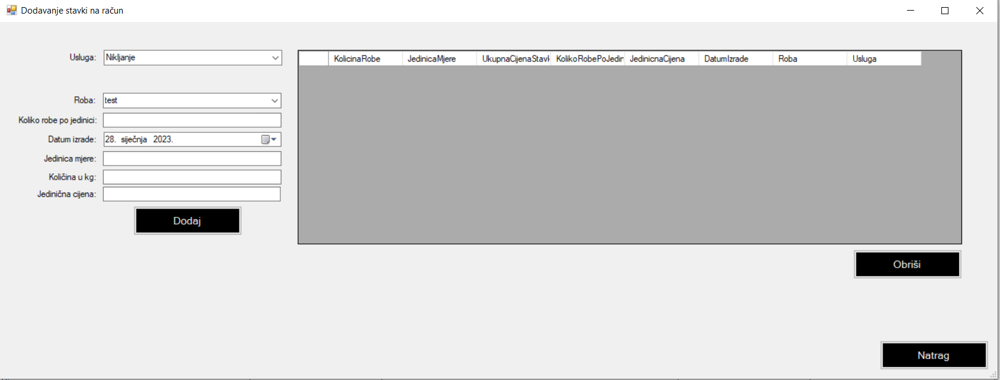

Forma predstavlja upravljanje stavkama za račun. Potrebno je odabrati određenu uslugu, robu koja je vezana za tog klijenta. Ukoliko robe nema, morate napraviti radni nalog gdje se unosu roba za tog klijenta. Morate unijeti broj jedinica po robi. Na primjer, roba su rešetke, Koliko robe po jedinici je 10 ili 20, ovisno koliko robe Vam je klijent donio. Morate staviti datum izrade odabirnom datuma i godine. Jedinicu mjere, standardna jedinica je kilogram kg, sveukupnu količinu koja će se automatski izračunati prilikom unosa Koliko robe po jedinici. Naravno Vi određujete jediničnu cijenu. Zatim kliknete na gumb dodaj. Trebali biste vidjeti, sa strane da se je roba dodala. Ako nešto zeznete kod dodavanja robe, robu možete obrisati klikom na gumb Obriši. Kada zatvorite prozor, trebali biste vidjeti stavke kod prozora za izdavanje računa.
